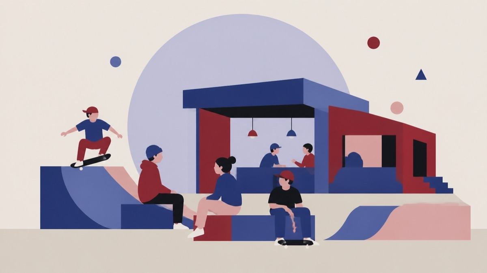

På dagsordenen 2. december, Sundhed-, Unge- og Forebyggelsesudvalget, Sønderborg
Orientering om Plan for Ungekultur 2025-2026, herunder fremtidig messe for unge
Unge og uddannelseKultur og fritid

Kort fortalt
- Hvem
- Sundhed-, Unge- og Forebyggelsesudvalget, Sønderborg Kommune
- Hvornår
- Onsdag 2. december 2026
- Status
- På dagsordenen. Sagen behandles på mødet.
Er noget forkert her? Skriv til os
Hvad kan du gøre?
- Skriv til politikerne
- Udvalgets møder er lukkede, men du kan skrive til medlemmerne før mødet onsdag 2. december 2026. Du finder dem på sonderborgkommune.dk.
Læs hele sagen Kommunens egen tekst
Indstilling
Forvaltningen indstiller til Sundhed-, Unge- og Forebyggelsesudvalget at tage
orienteringen til efterretning
Sagsfremstilling
Sønderborg Kommune har fokus på at skabe gode rammer og muligheder for unge i kommunen. Som led i dette
arbejde er Plan for Ungekultur 2025-2026 blevet til i tæt samarbejde med lokale unge og med afsæt i deres
perspektiver, ønsker og idéer til et godt ungdomsliv i Sønderborg Kommune.
Plan for Ungekultur har sit afsæt i en byrådsbeslutning fra den 26. maj 2021. Den seneste plan er udarbejdet af en
arbejdsgruppe bestående af unge med forskellige uddannelsesmæssige baggrunde, aldre og køn. Unge har
selvstændigt tilrettelagt og gennemført workshops, bearbejdet de indsamlede data samt udarbejdet og layoutet
planen. Planen blev efterfølgende godkendt af Udvalget for Kultur, Idræt og Medborgerskab den 6. november
I Plan for Ungekultur defineres ungekultur som:
”Ungekultur er det, unge mennesker gør. Det er musik, ildsjæle, mødesteder, fremtiden, menneskerettigheder,
trivsel – både fysisk og psykisk, fællesskaber, sociale medier, at være sammen på tværs af forskelligheder,
fremskridt og at fejre forskelligheder! Ungekultur skaber sammenhold og kan anvendes som bro mellem forskellige
fællesskaber. Ungekultur giver unge en plads og en stemme”.
Ungekultur er således et udtryk for det, der kendetegner ungdomslivet her og nu, og som samtidig er i konstant
udvikling. Et centralt perspektiv i planen er, at ungekultur skal give unge en plads og en stemme samt skabe
sammenhæng og bro mellem forskellige fællesskaber.
Et gennemgående tema i input fra unge er et ønske om bedre information og overblik over de muligheder, tilbud og
aktiviteter, der findes for unge i Sønderborg Kommune og lokalområdet. Unge oplever, at det kan være vanskeligt
at navigere i de mange eksisterende tilbud, og at manglende kendskab til mulighederne kan betyde, at de går glip
af aktiviteter og fællesskaber, som de ellers gerne ville deltage i.
Sønderborg Ungdomsråd har desuden peget på et behov for flere lokale arrangementer, hvor unge blandt andet
kan møde uddannelsesinstitutioner og virksomheder, f.eks. i forbindelse med karrieremesser.
Forvaltningen har udarbejdet en status for planens handlinger (bilag), som giver et billede af, de mange forskellige
aktiviteter, der er iværksat og som vil fortsætte og blive videreudviklet:
En folder ”Your guide to life in Sønderborg”
12 aktiviteter forskellige og nyttige steder i kommunen
Relancering af hjemmesiden sonderborg.dk/ung
Årlig langbordsmiddag for studerende.
En af handlingerne i planen omhandler en ungdomsmulighedsmesse. Forvaltningen planlægger derfor at afholde
en messe på EUC Syd i efteråret 2027.
Formålet med messen er at skabe én samlet indgang til de mange muligheder, tilbud og initiativer, der findes for
unge i Sønderborg Kommune og lokalområdet. Messen skal give unge mulighed for at blive inspireret, udforske
forskellige muligheder og gå i dialog med blandt andet uddannelsesinstitutioner, virksomheder, organisationer og
øvrige lokale aktører.
Samtidig skal messen bidrage til at synliggøre lokale muligheder og styrke unges kendskab til tilbud, aktiviteter og
fællesskaber, de kan blive en del af.
Målgruppen for messen er unge i Sønderborg Kommune i alderen 15-30 år. Forvaltningen står for planlægning og
afvikling af messen.
Økonomi
Der er afsat 255.000 kr til implementering af Plan for Ungekultur 2025-2026. De afsatte midler er overført til 2027 i
forbindelse med 3. bevillingsrevision 2026 og kan disponeres til afvikling af messen i 2027.
Messen kan dermed gennemføres inden for den eksisterende økonomiske ramme, og der er ikke behov for
yderligere bevilling.
Bevillingsmæssige konsekvenser
Økonomiforvaltningen oplyser, at sagen ikke har bevillingsmæssige konsekvenser.
Kilde: Sønderborg Kommune, Sundhed-, Unge- og Forebyggelsesudvalget, dagsorden fra mødet onsdag 2. december 2026, punkt 8. Læs den originale sag hos kommunen.